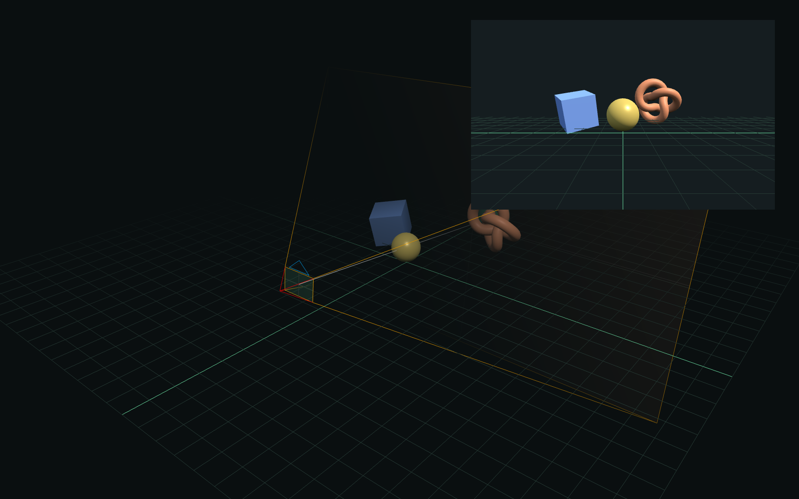

(insert ../../shared/header.md.html here)
**Camera Projection Lab**
This page is an unlisted experiment in combining Markdeep prose with reusable interactive graphics. The scene below shows a perspective camera from the outside while the inset shows the image produced by that camera.
Change the field of view and clipping planes to see the frustum reshape. Move the yellow sphere through depth to see when it falls outside the visible interval. Drag the world view to inspect the construction from another angle.

**Why this is a useful pilot**
The figure exercises the parts future graphics lessons will need: a 3D scene, multiple synchronized views, direct manipulation, native controls, responsive rendering, and a readable fallback. The surrounding document remains ordinary Markdeep.
The renderer only draws when the figure first appears or something changes. All interactive figures on a page share one WebGL context, which leaves room for denser articles without opening a renderer for every canvas.